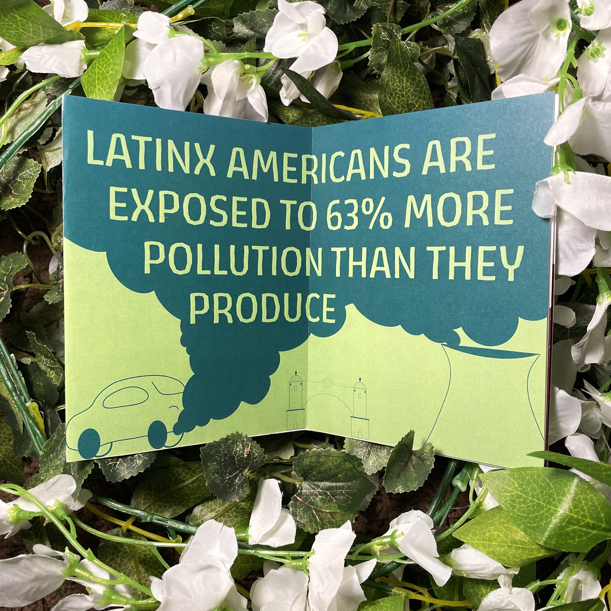
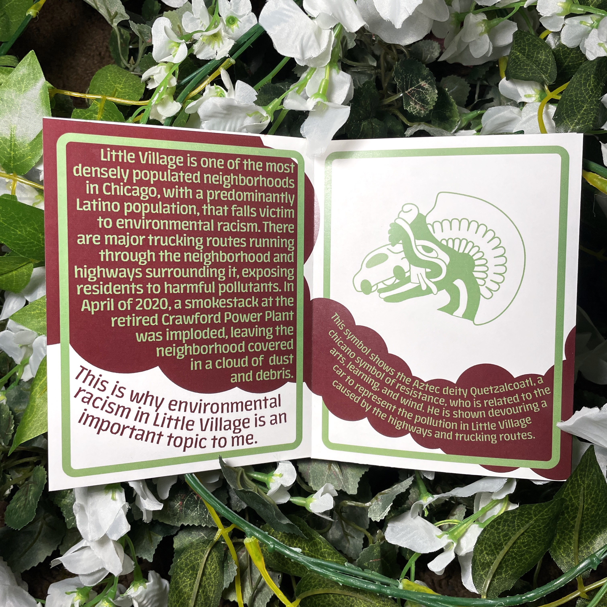
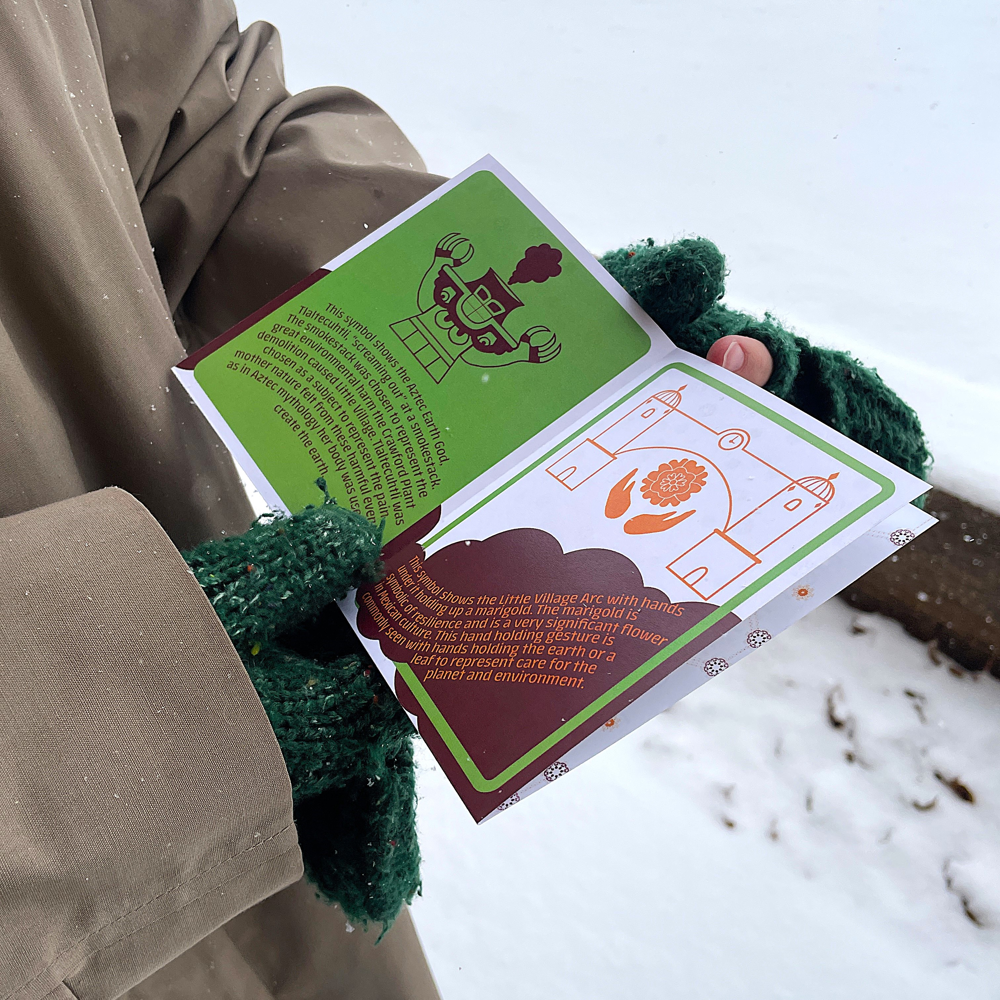
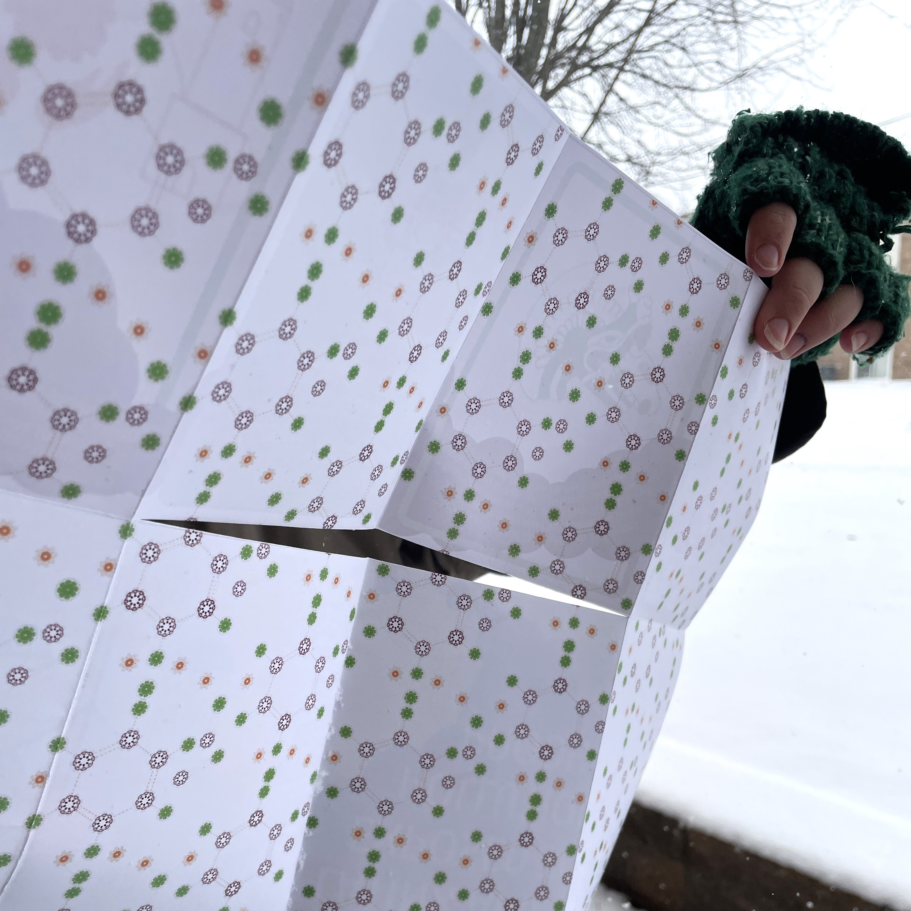
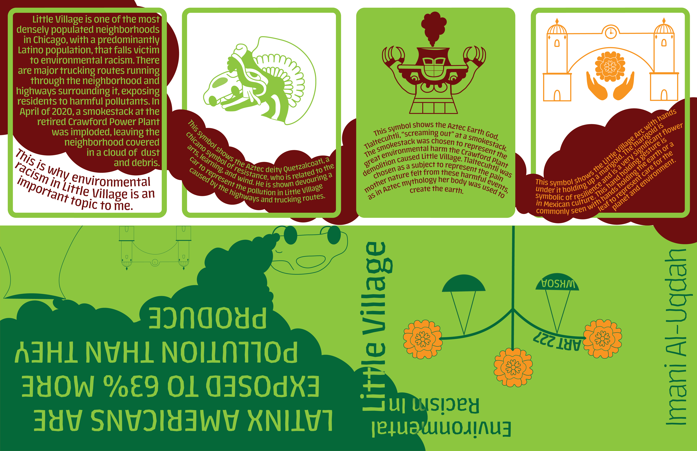

Zine of Resistance
2025, Adobe Illustrator, 17in x 11in
This project focused on creating a zine that explored symbols of resistance within a chosen movement. I chose to highlight environmental racism in Little Village as my cause. Drawing from Aztec mythology, I included figures such as Quetzalcoatl and Tlaltecuhtli, and incorporated elements of Mexican culture through familiar symbols like the marigold.






